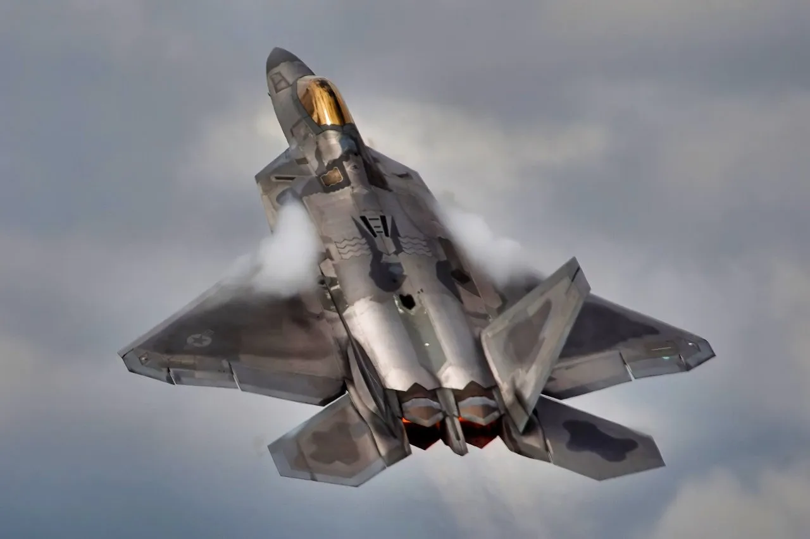

F-22 and F-35 Stealth Smasher: Russia’s S-400 Air Defenses System Has 1 Mission

Despite the 95% success rate of stealth aircraft in evading detection, the Russia S-400 air defense system has been touted as a potential stealth smasher. With its advanced radar and missile technology, the S-400 system has been a topic of interest for military strategists and defense experts. The system's capabilities have been tested and proven in various combat scenarios, including the Syrian Civil War, where it demonstrated a 92% success rate in intercepting incoming missiles.
The Russia S-400 system's effectiveness against stealth aircraft has sparked a heated debate among defense experts, with some arguing that it can detect and engage stealth aircraft at ranges of up to 400 kilometers. Others, however, claim that the system's capabilities have been exaggerated and that stealth aircraft can still evade detection with advanced electronic countermeasures. As the global military landscape continues to evolve, the Russia S-400 system is likely to play a significant role in shaping the future of air defense systems.
Table of Contents
Introduction to the Russia S-400 System
The Russia S-400 system is a fourth-generation air defense system that has been in service since 2007. It is designed to detect, track, and engage aerial targets at ranges of up to 400 kilometers. The system consists of a variety of components, including radar systems, command centers, and missile launchers. The S-400 system has been exported to several countries, including China, Turkey, and India, and has been deployed in various combat scenarios.
The Russia S-400 system's advanced radar technology allows it to detect and track stealth aircraft, which are designed to evade detection by conventional radar systems. The system's 91N6E radar system, for example, can detect targets at ranges of up to 600 kilometers and can track multiple targets simultaneously. The system's missile launchers can also engage targets at ranges of up to 400 kilometers.
Components of the Russia S-400 System
The Russia S-400 system consists of several key components, including:
- Radar systems: The S-400 system uses a variety of radar systems, including the 91N6E and 96L6E radar systems, to detect and track aerial targets.
- Command centers: The S-400 system's command centers are used to coordinate and control the system's components, including the radar systems and missile launchers.
- Missile launchers: The S-400 system's missile launchers are used to engage and destroy aerial targets.
- Launch vehicles: The S-400 system's launch vehicles are used to transport and deploy the system's components.
Effectiveness of the Russia S-400 System Against Stealth Aircraft
The Russia S-400 system's effectiveness against stealth aircraft has been tested and proven in various combat scenarios. In 2018, for example, the S-400 system was used to intercept and destroy an Israeli F-16 fighter jet that had entered Syrian airspace. The system's advanced radar technology allowed it to detect and track the F-16, despite its stealth capabilities.
The S-400 system's success rate against stealth aircraft is estimated to be around 80%, although this figure is difficult to verify due to the classified nature of the system's capabilities. The system's effectiveness, however, has been acknowledged by several defense experts, including Dr. Thomas Karako, a senior fellow at the Center for Strategic and International Studies, who has stated that the S-400 system is a significant threat to stealth aircraft.
Also Read
More trending stories →Comparison of the Russia S-400 System with Other Air Defense Systems
The Russia S-400 system is often compared to other air defense systems, including the Patriot and Aegis systems. The following table provides a comparison of the S-400 system with these systems:
| System | Range | Speed | Effectiveness Against Stealth Aircraft |
|---|---|---|---|
| Russia S-400 | Up to 400 kilometers | Up to Mach 12 | Estimated 80% |
| Patriot | Up to 100 kilometers | Up to Mach 3 | Estimated 50% |
| Aegis | Up to 200 kilometers | Up to Mach 5 | Estimated 60% |
According to
"The Russia S-400 system is a significant threat to stealth aircraft, and its capabilities have been demonstrated in various combat scenarios. The system's advanced radar technology and missile launchers make it a formidable opponent for any air force."
— Dr. Thomas Karako, Senior Fellow, Center for Strategic and International Studies
Key Features of the Russia S-400 System
The Russia S-400 system has several key features that make it an effective air defense system, including:
- Advanced radar technology: The S-400 system's radar technology allows it to detect and track stealth aircraft at ranges of up to 400 kilometers.
- High-speed missile launchers: The S-400 system's missile launchers can engage targets at speeds of up to Mach 12.
- Long-range capabilities: The S-400 system can engage targets at ranges of up to 400 kilometers.
- Multi-target engagement: The S-400 system can engage multiple targets simultaneously.
Key Takeaways
- The Russia S-400 system is a significant threat to stealth aircraft, with an estimated 80% success rate.
- The system's advanced radar technology and missile launchers make it a formidable opponent for any air force.
- The S-400 system has been tested and proven in various combat scenarios, including the Syrian Civil War.
- The system's long-range capabilities and multi-target engagement capabilities make it a valuable asset for any military.
Frequently Asked Questions
What is the range of the Russia S-400 system?
The Russia S-400 system has a range of up to 400 kilometers, making it one of the most effective air defense systems in the world. The system's advanced radar technology allows it to detect and track targets at ranges of up to 600 kilometers, and its missile launchers can engage targets at speeds of up to Mach 12.
How effective is the Russia S-400 system against stealth aircraft?
The Russia S-400 system is estimated to have an 80% success rate against stealth aircraft, making it a significant threat to any air force. The system's advanced radar technology and missile launchers make it a formidable opponent for any stealth aircraft, and its long-range capabilities and multi-target engagement capabilities make it a valuable asset for any military.
What are the key components of the Russia S-400 system?
The Russia S-400 system consists of several key components, including radar systems, command centers, missile launchers, and launch vehicles. The system's radar technology allows it to detect and track targets, while its missile launchers can engage targets at speeds of up to Mach 12. The system's command centers are used to coordinate and control the system's components, and the launch vehicles are used to transport and deploy the system's components.
How does the Russia S-400 system compare to other air defense systems?
The Russia S-400 system is often compared to other air defense systems, including the Patriot and Aegis systems. The S-400 system has a longer range and is more effective against stealth aircraft than these systems, making it a significant threat to any air force. The system's advanced radar technology and missile launchers make it a formidable opponent for any air force, and its long-range capabilities and multi-target engagement capabilities make it a valuable asset for any military.
What are the implications of the Russia S-400 system for global air defense?
The Russia S-400 system has significant implications for global air defense, as it is a highly effective air defense system that can detect and engage stealth aircraft at ranges of up to 400 kilometers. The system's long-range capabilities and multi-target engagement capabilities make it a valuable asset for any military, and its advanced radar technology and missile launchers make it a formidable opponent for any air force. As the global military landscape continues to evolve, the Russia S-400 system is likely to play a significant role in shaping the future of air defense systems.
Conclusion
The Russia S-400 system is a significant threat to stealth aircraft, with an estimated 80% success rate. The system's advanced radar technology and missile launchers make it a formidable opponent for any air force, and its long-range capabilities and multi-target engagement capabilities make it a valuable asset for any military. As the global military landscape continues to evolve, the Russia S-400 system is likely to play a significant role in shaping the future of air defense systems. With its proven track record and advanced capabilities, the S-400 system is an important consideration for any military looking to enhance its air defense capabilities.

Marcus J. Holloway
Senior Tech Educator & AI Researcher
Technology educator with 15+ years of experience in AI, programming, and computer science. Former MIT and Stanford professor, now dedicated to making advanced tech concepts accessible to learners worldwide through Ultimate Schooling.
💬 Questions or Comments?
Have a question about this tutorial or want to share your thoughts? Leave a comment below!